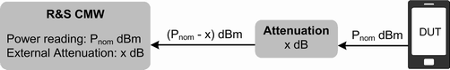

The R&S CMW provides several settings that are similar in different measurements but can be configured independently. These settings control the routing of input signals, the correction of the input power, the RF analyzer and the trigger system.
The R&S CMW provides several RF connectors on the front panel. The RF input connector and the RX module to be used are selected in the "RF Routing" section at the beginning of the measurement configuration dialog.
See also "Signal Path Settings".
Defines the value of an external attenuation (or gain, if the value is negative) in the input path. This setting is suitable if the test setup contains a frequency-independent attenuating component or amplifier, for example a cable, a test fixture or an RF shield box.
Additional settings for compensation of a frequency-dependent attenuation/gain are provided by the base system of the instrument. They allow you to define correction tables containing pairs of frequencies and associated attenuation/gain values.
If you activate a correction table for an input connector, the correction value derived from the table and the "External Attenuation" from the measurement settings are added. Correction values for intermediate frequencies between two frequency entries are calculated using linear interpolation. For frequencies higher than the highest frequency entry in the table, or lower than the lowest frequency entry, the correction value associated with the highest / lowest frequency entry is used.
The total correction value (frequency-independent "External Attenuation" + frequency-dependent correction) modifies the power reading of the measurement and ensures that the measured powers are referenced to the output of the DUT.
- Positive values increase the power reading, compensating for an attenuation.
- Negative values reduce the power reading, compensating for an amplification factor (gain).

The external attenuation also enters into the internal calculation of the maximum input power that the R&S CMW can measure (see "Expected Nominal Power" below).
Frequency-independent attenuations are defined as part of the measurement settings, refer to the description of the measurement application. Frequency-dependent correction tables are administrated in the setup dialog or via remote commands (...:FDCorrection:...).
While a correction table is active for the connector currently used by an application, the GUI of the application displays the table name together with the frequency-independent attenuation setting.

You can display the table entries by clicking the button "FDCorr!".
Defines the nominal power of the RF signal to be measured. Set the nominal power in accordance with the actual transmitter output power of the DUT. An additional "External Attenuation" (see above) can be used to compensate for the loss in the test setup. Some measurements provide additional parameters to account for variations of the signal power (e.g. the "User Margin" for the GPRF power measurement).
- If the "Expected Nominal Power" setting is too low, the RF input connector is overdriven and some measurement results are not reliable.
- If the "Expected Nominal Power" setting is too high, the RF input connector is underdriven, which also impairs the accuracy of the measurements.
Sets the center frequency of the RF analyzer. This value must be in accordance with the measured RF signal to obtain meaningful measurement results.